; picked in K562 (state 12:CtcfO, DNase); matched; chr1:85,410,649-85,410,943 (295bp)") 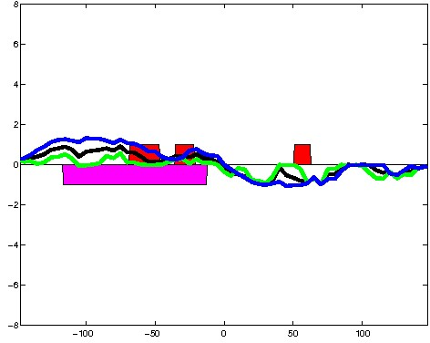
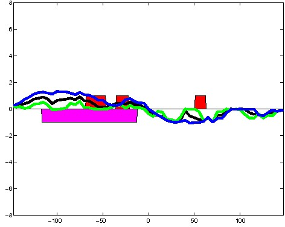
; picked in K562 (state 12:CtcfO, DNase); matched; chrX:73,235,269-73,235,563 (295bp)")
; picked in K562 (state 12:CtcfO, DNase); matched; chr4:88,954,469-88,954,763 (295bp)")
; picked in K562 (state 12:CtcfO, DNase); matched; chr7:2,517,289-2,517,583 (295bp)")
; picked in K562 (state 12:CtcfO, DNase); matched; chr13:111,064,549-111,064,843 (295bp)")
; picked in K562 (state 12:CtcfO, DNase); matched; chr1:92,756,989-92,757,283 (295bp)") 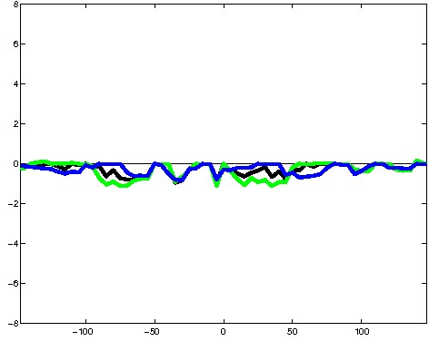
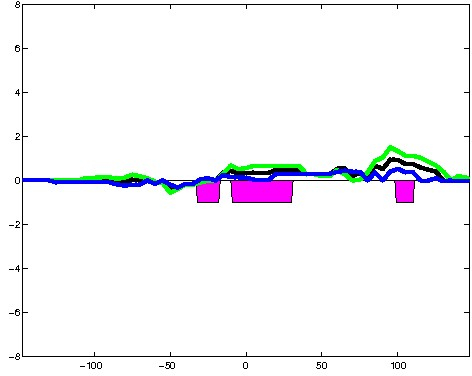
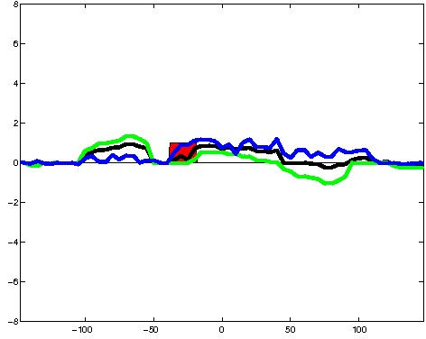
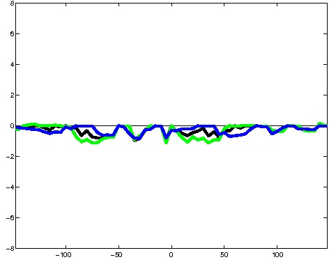
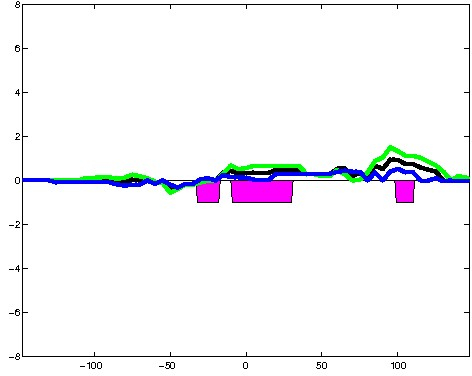
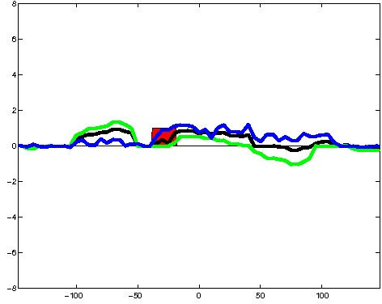
; picked in K562 (state 12:CtcfO, DNase); matched; chr2:64,822,569-64,822,863 (295bp)")
; picked in K562 (state 12:CtcfO, DNase); matched; chr12:114,650,869-114,651,163 (295bp)") 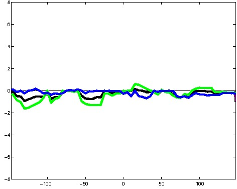
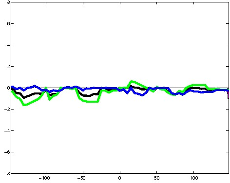
; picked in K562 (state 12:CtcfO, DNase); matched; chr15:75,127,489-75,127,783 (295bp)") 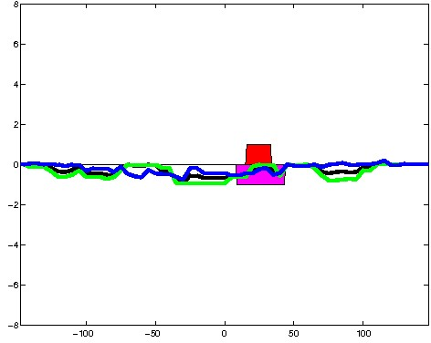
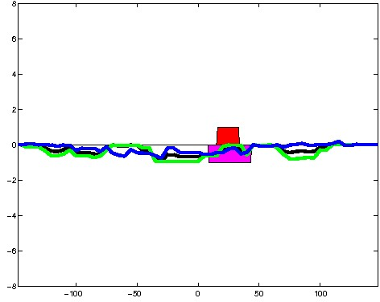
; picked in K562 (state 12:CtcfO, DNase); matched; chr1:90,088,489-90,088,783 (295bp)") 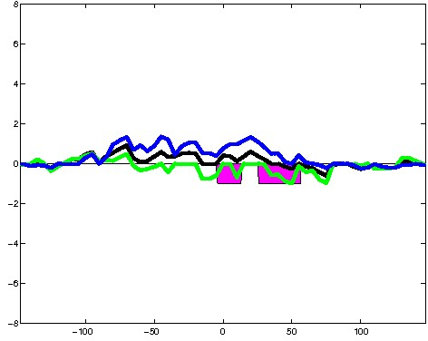
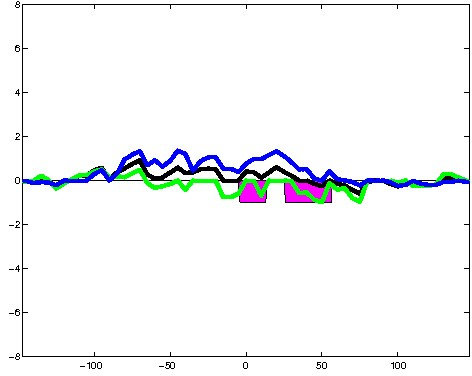
; picked in K562 (state 12:CtcfO, DNase); matched; chr11:61,543,969-61,544,263 (295bp)") 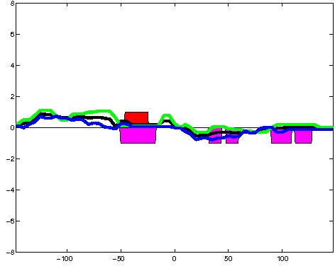
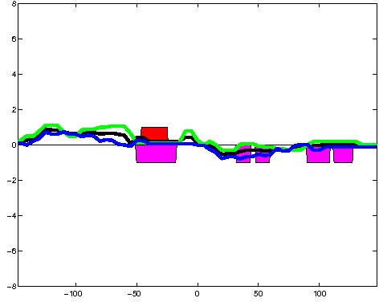
; picked in K562 (state 12:CtcfO, DNase); matched; chr1:7,729,609-7,729,903 (295bp)") 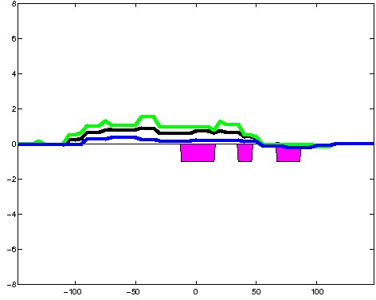
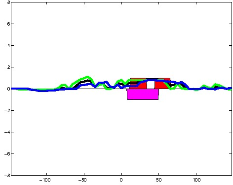
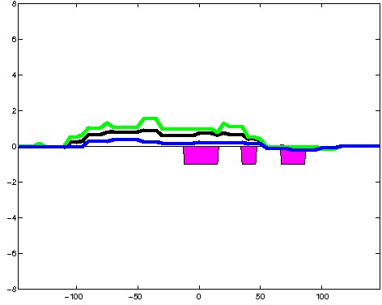
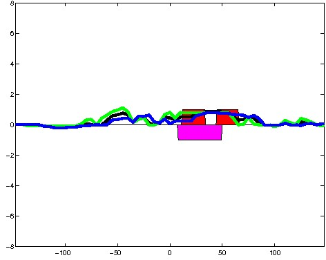
; picked in K562 (state 12:CtcfO, DNase); matched; chr1:100,600,409-100,600,703 (295bp)") 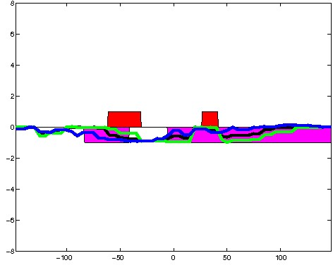
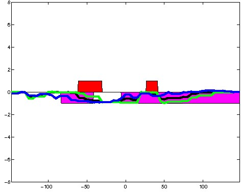
; picked in K562 (state 12:CtcfO, DNase); matched; chr3:183,198,149-183,198,443 (295bp)") 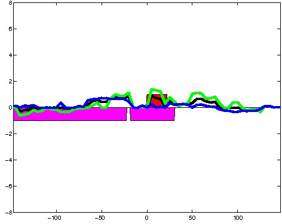
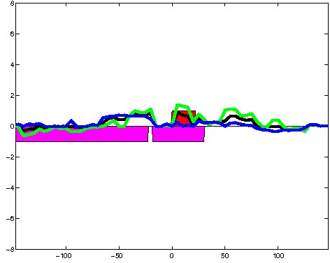
; picked in K562 (state 12:CtcfO, DNase); matched; chr1:147,362,329-147,362,623 (295bp)") 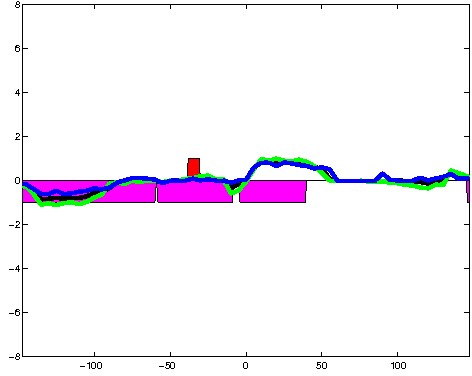
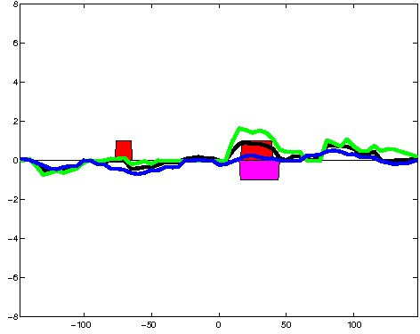
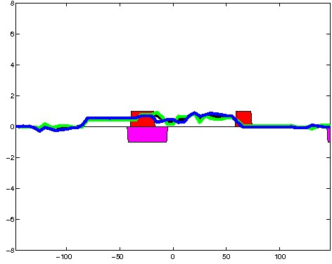
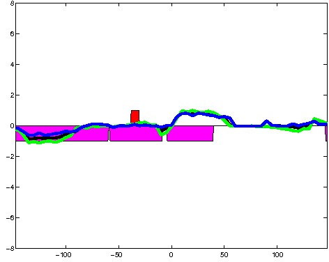
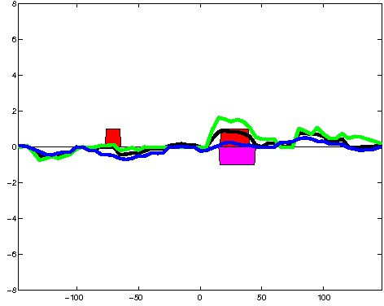
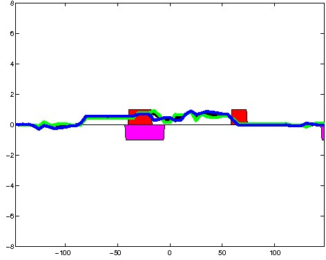
; picked in K562 (state 12:CtcfO, DNase); matched; chr2:138,623,549-138,623,843 (295bp)")
; picked in K562 (state 12:CtcfO, DNase); matched; chr8:81,003,929-81,004,223 (295bp)")
; picked in K562 (state 12:CtcfO, DNase); matched; chr17:3,730,469-3,730,763 (295bp)") 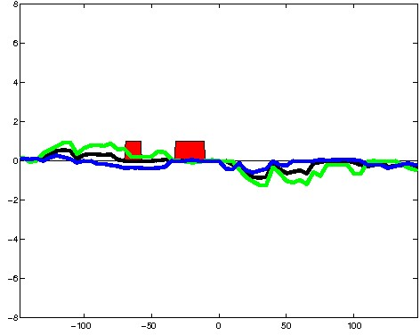
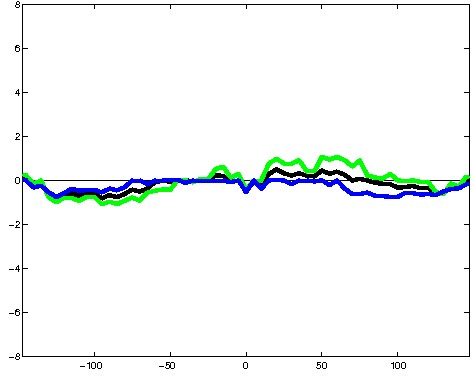
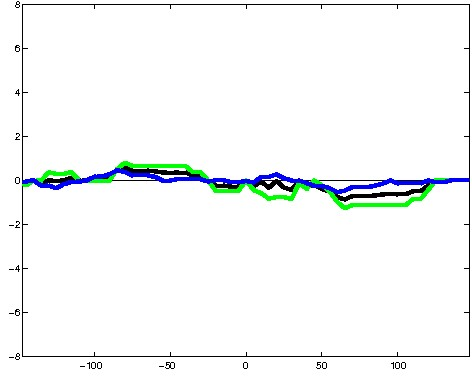
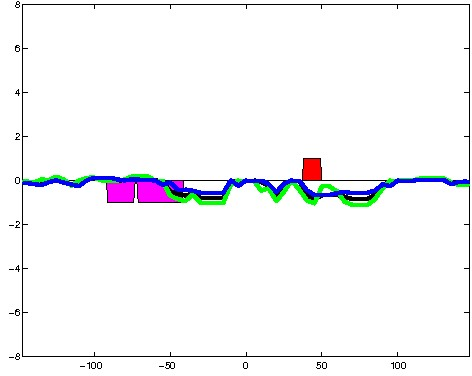
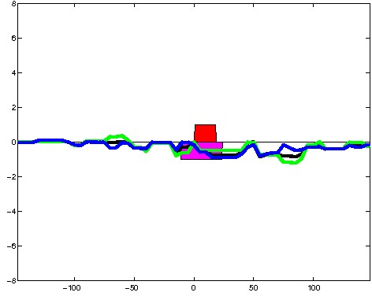
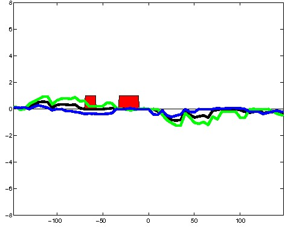
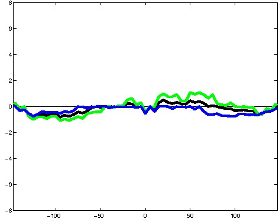
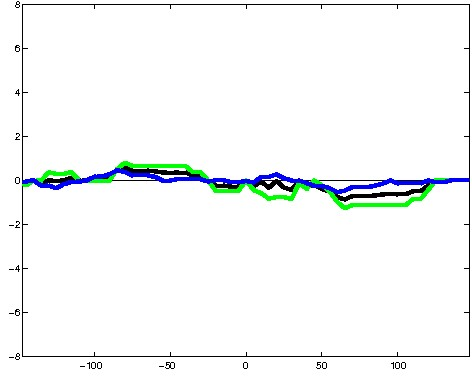
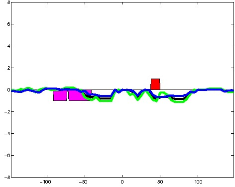
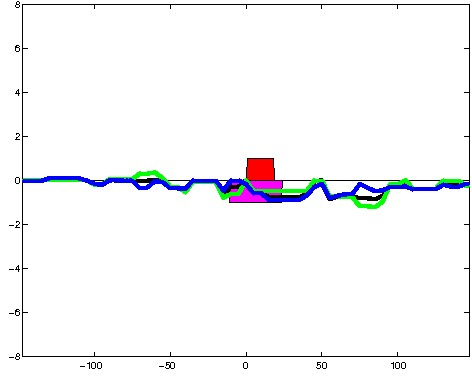
; picked in K562 (state 12:CtcfO, DNase); matched; chr15:42,376,629-42,376,923 (295bp)") 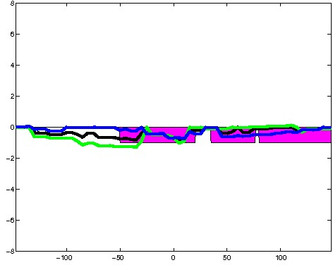
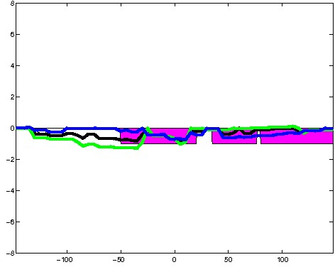
; picked in K562 (state 12:CtcfO, DNase); matched; chr20:35,067,849-35,068,143 (295bp)")
; picked in K562 (state 12:CtcfO, DNase); matched; chr7:105,669,929-105,670,223 (295bp)")
; picked in K562 (state 12:CtcfO, DNase); matched; chr6:106,671,249-106,671,543 (295bp)")
; picked in K562 (state 12:CtcfO, DNase); matched; chr3:14,550,389-14,550,683 (295bp)") 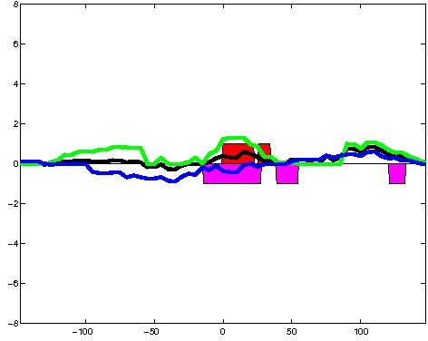
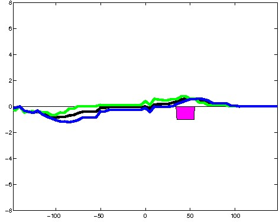
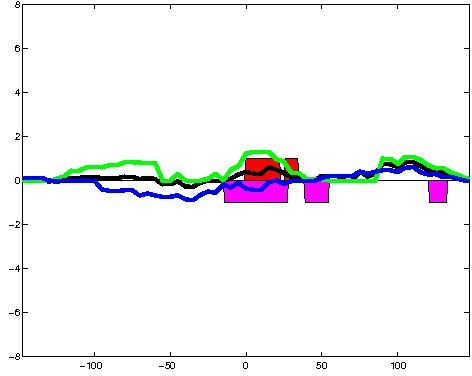
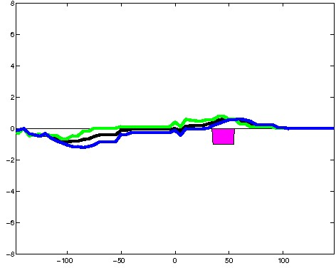
; picked in K562 (state 12:CtcfO, DNase); matched; chrX:47,942,629-47,942,923 (295bp)")
; picked in K562 (state 12:CtcfO, DNase); matched; chr3:10,364,029-10,364,323 (295bp)")
; picked in K562 (state 12:CtcfO, DNase); matched; chr9:19,028,949-19,029,243 (295bp)") 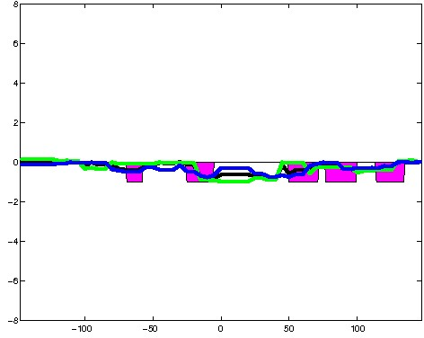
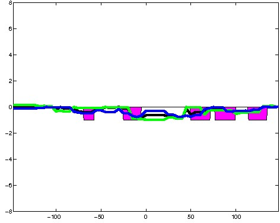
; picked in K562 (state 12:CtcfO, DNase); matched; chr12:4,867,309-4,867,603 (295bp)")
; picked in K562 (state 12:CtcfO, DNase); matched; chr10:62,642,929-62,643,223 (295bp)") 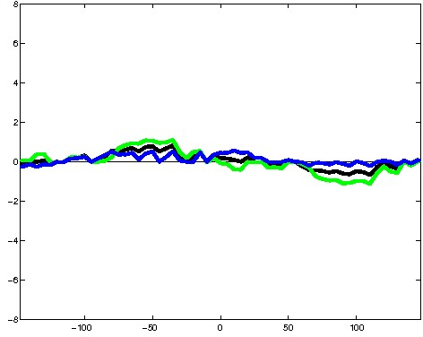
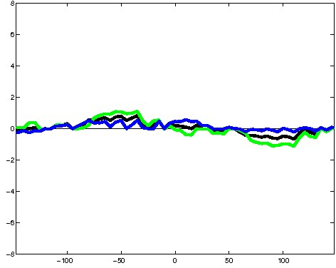
; picked in K562 (state 12:CtcfO, DNase); matched; chr5:54,442,469-54,442,763 (295bp)")
; picked in K562 (state 12:CtcfO, DNase); matched; chr5:56,196,669-56,196,963 (295bp)") 


; picked in K562 (state 12:CtcfO, DNase); matched; chr12:48,232,389-48,232,683 (295bp)")
; picked in K562 (state 12:CtcfO, DNase); matched; chr7:101,151,069-101,151,363 (295bp)")
; picked in K562 (state 12:CtcfO, DNase); matched; chr5:180,464,389-180,464,683 (295bp)") 

; picked in K562 (state 12:CtcfO, DNase); matched; chr6:83,765,169-83,765,463 (295bp)") 

; picked in K562 (state 12:CtcfO, DNase); matched; chr3:15,282,909-15,283,203 (295bp)")
; picked in K562 (state 12:CtcfO, DNase); matched; chr3:184,495,589-184,495,883 (295bp)") 

; picked in K562 (state 12:CtcfO, DNase); matched; chr2:113,716,429-113,716,723 (295bp)") 


; picked in K562 (state 12:CtcfO, DNase); matched; chr7:42,916,109-42,916,403 (295bp)") 

; picked in K562 (state 12:CtcfO, DNase); matched; chr3:66,872,749-66,873,043 (295bp)") 


; picked in K562 (state 12:CtcfO, DNase); matched; chr7:139,517,149-139,517,443 (295bp)") 


; picked in K562 (state 12:CtcfO, DNase); matched; chr11:16,967,509-16,967,803 (295bp)")
; picked in K562 (state 12:CtcfO, DNase); matched; chr1:31,656,829-31,657,123 (295bp)")
; picked in K562 (state 12:CtcfO, DNase); matched; chr15:63,581,069-63,581,363 (295bp)")
; picked in K562 (state 12:CtcfO, DNase); matched; chrX:151,810,489-151,810,783 (295bp)") 


; picked in K562 (state 12:CtcfO, DNase); matched; chr12:121,443,169-121,443,463 (295bp)") 


; picked in K562 (state 12:CtcfO, DNase); matched; chr3:4,985,629-4,985,923 (295bp)") 

; picked in K562 (state 12:CtcfO, DNase); matched; chr15:65,346,669-65,346,963 (295bp)") 


; picked in K562 (state 12:CtcfO, DNase); matched; chr8:11,269,109-11,269,403 (295bp)")
; picked in K562 (state 12:CtcfO, DNase); matched; chrX:70,218,349-70,218,643 (295bp)")
; picked in K562 (state 12:CtcfO, DNase); matched; chr15:95,125,649-95,125,943 (295bp)")
; picked in K562 (state 12:CtcfO, DNase); matched; chr11:114,188,509-114,188,803 (295bp)")
; picked in K562 (state 12:CtcfO, DNase); matched; chr6:74,442,829-74,443,123 (295bp)")
; picked in K562 (state 12:CtcfO, DNase); matched; chr1:68,582,349-68,582,643 (295bp)")
; picked in K562 (state 12:CtcfO, DNase); matched; chr11:96,197,029-96,197,323 (295bp)")
; picked in K562 (state 12:CtcfO, DNase); matched; chr3:169,480,749-169,481,043 (295bp)")
; picked in K562 (state 12:CtcfO, DNase); matched; chr6:50,759,649-50,759,943 (295bp)")
; picked in K562 (state 12:CtcfO, DNase); matched; chr15:68,599,009-68,599,303 (295bp)")
; picked in K562 (state 12:CtcfO, DNase); matched; chr20:49,598,069-49,598,363 (295bp)")
; picked in K562 (state 12:CtcfO, DNase); matched; chr2:79,446,569-79,446,863 (295bp)")
; picked in K562 (state 12:CtcfO, DNase); matched; chr10:94,799,529-94,799,823 (295bp)")
; picked in K562 (state 12:CtcfO, DNase); matched; chr17:66,259,169-66,259,463 (295bp)")
; picked in K562 (state 12:CtcfO, DNase); matched; chr12:8,261,409-8,261,703 (295bp)")
; picked in K562 (state 12:CtcfO, DNase); matched; chr7:137,277,009-137,277,303 (295bp)")
; picked in K562 (state 12:CtcfO, DNase); matched; chr9:96,074,889-96,075,183 (295bp)")
; picked in K562 (state 12:CtcfO, DNase); matched; chr19:55,187,769-55,188,063 (295bp)")
; picked in K562 (state 12:CtcfO, DNase); matched; chr6:154,822,389-154,822,683 (295bp)")
; picked in K562 (state 12:CtcfO, DNase); matched; chr11:113,929,989-113,930,283 (295bp)")
; picked in K562 (state 12:CtcfO, DNase); matched; chr6:13,195,149-13,195,443 (295bp)")
; picked in K562 (state 12:CtcfO, DNase); matched; chr17:73,885,609-73,885,903 (295bp)")
; picked in K562 (state 12:CtcfO, DNase); matched; chr19:16,825,569-16,825,863 (295bp)")
; picked in K562 (state 12:CtcfO, DNase); matched; chr11:33,187,629-33,187,923 (295bp)")
; picked in K562 (state 12:CtcfO, DNase); matched; chr14:36,291,109-36,291,403 (295bp)")
; picked in K562 (state 12:CtcfO, DNase); matched; chr4:44,450,849-44,451,143 (295bp)")
; picked in K562 (state 12:CtcfO, DNase); matched; chr1:171,954,049-171,954,343 (295bp)")
; picked in K562 (state 12:CtcfO, DNase); matched; chr8:135,898,709-135,899,003 (295bp)")
; picked in K562 (state 12:CtcfO, DNase); matched; chr17:39,643,109-39,643,403 (295bp)")
; picked in K562 (state 12:CtcfO, DNase); matched; chr11:7,914,329-7,914,623 (295bp)")
; picked in K562 (state 12:CtcfO, DNase); matched; chr10:47,336,789-47,337,083 (295bp)")
; picked in K562 (state 12:CtcfO, DNase); matched; chr12:117,650,449-117,650,743 (295bp)")
; picked in K562 (state 12:CtcfO, DNase); matched; chr11:124,065,829-124,066,123 (295bp)")
; picked in K562 (state 12:CtcfO, DNase); matched; chr6:10,478,749-10,479,043 (295bp)")
; picked in K562 (state 12:CtcfO, DNase); matched; chr7:132,394,709-132,395,003 (295bp)")
; picked in K562 (state 12:CtcfO, DNase); matched; chr17:64,724,129-64,724,423 (295bp)")
; picked in K562 (state 12:CtcfO, DNase); matched; chr5:16,160,869-16,161,163 (295bp)")
; picked in K562 (state 12:CtcfO, DNase); matched; chr7:39,785,869-39,786,163 (295bp)")
; picked in K562 (state 12:CtcfO, DNase); matched; chr3:69,021,649-69,021,943 (295bp)")
; picked in K562 (state 12:CtcfO, DNase); matched; chr3:32,218,769-32,219,063 (295bp)")
; picked in K562 (state 12:CtcfO, DNase); matched; chr2:21,185,849-21,186,143 (295bp)")
; picked in K562 (state 12:CtcfO, DNase); matched; chr5:135,165,789-135,166,083 (295bp)")
; picked in K562 (state 12:CtcfO, DNase); matched; chr12:29,226,609-29,226,903 (295bp)")
; picked in K562 (state 12:CtcfO, DNase); matched; chr3:30,810,249-30,810,543 (295bp)")
; picked in K562 (state 12:CtcfO, DNase); matched; chr6:73,290,069-73,290,363 (295bp)")
; picked in K562 (state 12:CtcfO, DNase); matched; chr7:75,892,309-75,892,603 (295bp)")
; picked in K562 (state 12:CtcfO, DNase); matched; chr1:117,267,369-117,267,663 (295bp)")
; picked in K562 (state 12:CtcfO, DNase); matched; chr22:17,682,149-17,682,443 (295bp)")
; picked in K562 (state 12:CtcfO, DNase); matched; chr12:103,942,409-103,942,703 (295bp)")
; picked in K562 (state 12:CtcfO, DNase); matched; chr14:56,941,169-56,941,463 (295bp)")
; picked in K562 (state 12:CtcfO, DNase); matched; chr11:22,809,149-22,809,443 (295bp)")
; picked in K562 (state 12:CtcfO, DNase); matched; chr6:107,056,029-107,056,323 (295bp)")
; picked in K562 (state 12:CtcfO, DNase); matched; chr1:92,392,849-92,393,143 (295bp)")
; picked in K562 (state 12:CtcfO, DNase); matched; chr19:12,632,849-12,633,143 (295bp)")
; picked in K562 (state 12:CtcfO, DNase); matched; chr6:43,037,709-43,038,003 (295bp)")
; picked in K562 (state 12:CtcfO, DNase); matched; chr8:126,714,769-126,715,063 (295bp)")
; picked in K562 (state 12:CtcfO, DNase); matched; chrX:118,832,869-118,833,163 (295bp)")
; picked in K562 (state 12:CtcfO, DNase); matched; chr10:115,559,389-115,559,683 (295bp)")
; picked in K562 (state 12:CtcfO, DNase); matched; chr3:28,328,129-28,328,423 (295bp)")
; picked in K562 (state 12:CtcfO, DNase); matched; chr14:81,462,709-81,463,003 (295bp)")
; picked in K562 (state 12:CtcfO, DNase); matched; chr8:75,278,409-75,278,703 (295bp)")
; picked in K562 (state 12:CtcfO, DNase); matched; chr8:94,373,389-94,373,683 (295bp)")
; picked in K562 (state 12:CtcfO, DNase); matched; chr2:73,912,169-73,912,463 (295bp)")
; picked in K562 (state 12:CtcfO, DNase); matched; chr12:7,245,089-7,245,383 (295bp)")
; picked in K562 (state 12:CtcfO, DNase); matched; chr3:37,477,129-37,477,423 (295bp)")
; picked in K562 (state 12:CtcfO, DNase); matched; chrX:69,482,849-69,483,143 (295bp)")
; picked in K562 (state 12:CtcfO, DNase); matched; chr1:89,343,089-89,343,383 (295bp)")
; picked in K562 (state 12:CtcfO, DNase); matched; chr14:35,192,209-35,192,503 (295bp)")
; picked in K562 (state 12:CtcfO, DNase); matched; chr12:110,792,889-110,793,183 (295bp)")
; picked in K562 (state 12:CtcfO, DNase); matched; chr8:38,824,089-38,824,383 (295bp)")
; picked in K562 (state 12:CtcfO, DNase); matched; chr9:27,033,809-27,034,103 (295bp)")
; picked in K562 (state 12:CtcfO, DNase); matched; chr19:46,785,669-46,785,963 (295bp)")
; picked in K562 (state 12:CtcfO, DNase); matched; chr2:20,887,629-20,887,923 (295bp)")
; picked in K562 (state 12:CtcfO, DNase); matched; chr10:134,451,369-134,451,663 (295bp)")
; picked in K562 (state 12:CtcfO, DNase); matched; chr1:232,002,409-232,002,703 (295bp)")
; picked in K562 (state 12:CtcfO, DNase); matched; chr10:93,518,369-93,518,663 (295bp)")
; picked in K562 (state 12:CtcfO, DNase); matched; chr19:39,443,229-39,443,523 (295bp)")
; picked in K562 (state 12:CtcfO, DNase); matched; chr16:9,127,329-9,127,623 (295bp)")
; picked in K562 (state 12:CtcfO, DNase); matched; chr7:147,983,309-147,983,603 (295bp)")
; picked in K562 (state 12:CtcfO, DNase); matched; chr1:154,249,249-154,249,543 (295bp)")
; picked in K562 (state 12:CtcfO, DNase); matched; chr5:39,376,389-39,376,683 (295bp)")
; picked in K562 (state 12:CtcfO, DNase); matched; chr10:12,698,589-12,698,883 (295bp)")
; picked in K562 (state 12:CtcfO, DNase); matched; chr7:34,863,329-34,863,623 (295bp)")
; picked in K562 (state 12:CtcfO, DNase); matched; chr7:40,720,349-40,720,643 (295bp)")
; picked in K562 (state 12:CtcfO, DNase); matched; chr22:43,216,209-43,216,503 (295bp)")
; picked in K562 (state 12:CtcfO, DNase); matched; chr4:73,887,449-73,887,743 (295bp)")
; picked in K562 (state 12:CtcfO, DNase); matched; chr17:48,192,309-48,192,603 (295bp)")
; picked in K562 (state 12:CtcfO, DNase); matched; chr3:17,686,609-17,686,903 (295bp)")
; picked in K562 (state 12:CtcfO, DNase); matched; chr6:155,648,629-155,648,923 (295bp)")
; picked in K562 (state 12:CtcfO, DNase); matched; chr19:30,326,029-30,326,323 (295bp)")
; picked in K562 (state 12:CtcfO, DNase); matched; chr5:54,483,189-54,483,483 (295bp)")
; picked in K562 (state 12:CtcfO, DNase); matched; chr8:75,765,609-75,765,903 (295bp)")
; picked in K562 (state 12:CtcfO, DNase); matched; chr10:75,023,689-75,023,983 (295bp)")
; picked in K562 (state 12:CtcfO, DNase); matched; chr9:89,951,789-89,952,083 (295bp)")
; picked in K562 (state 12:CtcfO, DNase); matched; chr6:74,448,849-74,449,143 (295bp)")
; picked in K562 (state 12:CtcfO, DNase); matched; chr18:72,009,669-72,009,963 (295bp)")
; picked in K562 (state 12:CtcfO, DNase); matched; chr2:203,043,069-203,043,363 (295bp)")
; picked in K562 (state 12:CtcfO, DNase); matched; chr4:106,636,829-106,637,123 (295bp)")